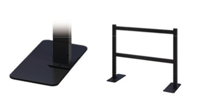
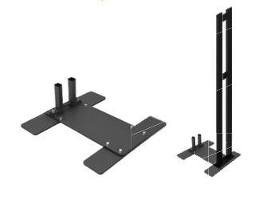
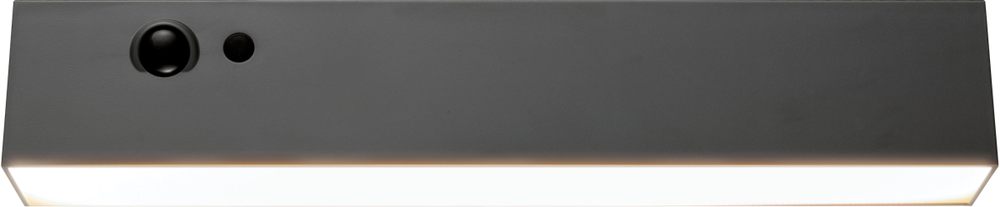
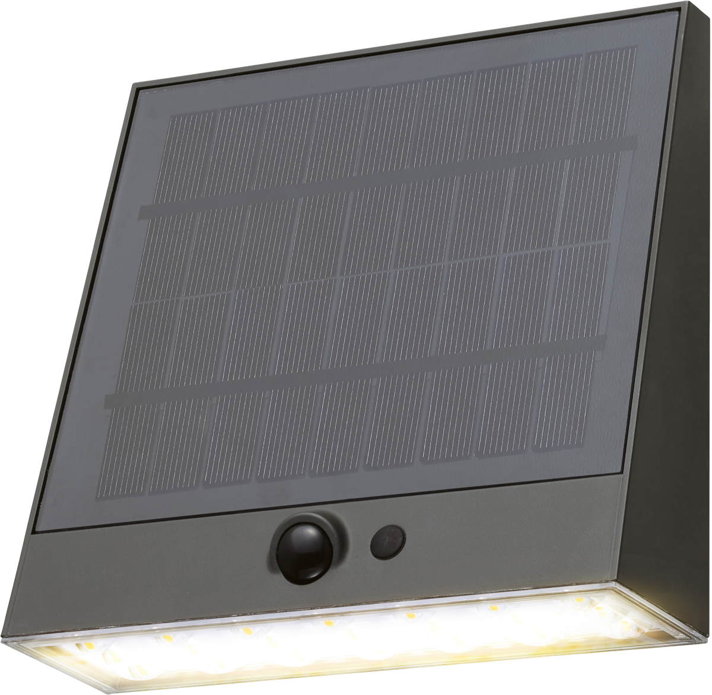
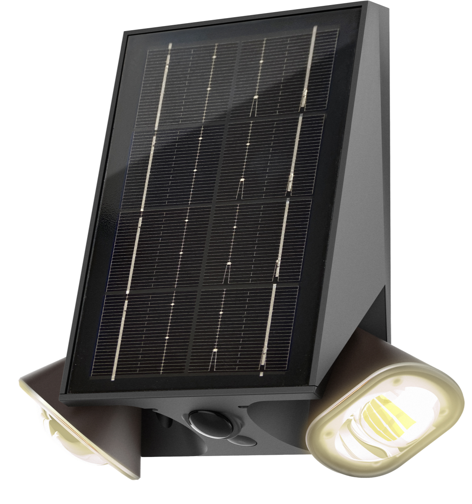

人が敷地を横切っていく
道路との境界が曖昧で、通り道のようになっている。
対策を見る
OPEN EXTERIOR / ENTRY CONTROL
人が敷地を横切る。車が角に乗り上げる。
気になる場所に、外まわりからできる工夫を。
A LITTLE MORE PEACE OF MIND
オープン外構は、街にひらかれた心地よさが魅力。その一方で、道路との境界がわかりにくく、敷地内を通り抜けられたり、角地に車が入り込んだりすることも。ポールやフェンスで場所に合った目印をつくり、入りにくい外まわりを考えてみませんか。
PLACE-BASED SOLUTIONS
通り抜けを防ぎたいのか、車の乗り上げを抑えたいのか。気になる場所と使い方に合わせて、アイテムを選びましょう。
EXPLUS / PRODUCT GUIDE
境界を示すポールから、コーナーをカバーするフェンス、自転車の持ち去りや転倒対策に使うサイクルポートスタンドまで掲載。設置方法や場所に合わせてお選びください。表示価格は同梱資料記載の参考売価です。

HEX-P01
敷地の境界や通路入口に。シンプルなポールで立ち入りを抑止します。
約 W130 × D130 × H800mm
参考売価¥7,000 /台

HEX-P02
別売チェーンを組み合わせて、敷地境界をより明確に。
約 W130 × D130 × H800mm
参考売価¥8,000 /台

HEX-P03
ガードポールを自立させるための専用ベース。
約 W350 × D350 × t4.5mm
参考売価¥5,000 /台

HEX-P04
侵入抑止の目印に。玄関まわりにもなじむデザイン。
約 W530 × D130 × H800mm
参考売価¥18,000 /台

HEX-P05
角地や敷地の端に。設置しやすいシンプルなフェンス。
約 W1000 × D115 × H800mm
参考売価¥16,000 /台

HEX-P06
スタイルポール／ガードフェンスを自立させるための専用ベース。
約 W150 × D460 × t4.5mm
参考売価¥5,000 /台

HEX-P07
置くだけで設置でき、収納や持ち運びにも対応。
約 W500 × D375 × H800mm
参考売価¥20,000 /台

HEX-P08
自転車1台用。タイヤを固定する高さを調整でき、持ち去り対策をサポートします。
約 W180 × D110 × H1200mm
参考売価¥12,000 /台

HEX-P09
サイクルポートスタンドを自立させるための専用ベース。
約 W500 × D535 × H165mm
参考売価¥7,000 /台

AFTER DARK / EXLIGHTS
敷地の境界が見えにくい場所やアプローチには、ソーラーライトの併用もおすすめです。人感センサー付きのライトなどを組み合わせ、夜間の見通しと安心感を高めましょう。
EXLIGHTS / SOLAR LIGHTS

LGS-EL03
約 W284 × D63 × H50mm
上代¥5,000 /個

LGS-EL04
約 W158 × D50 × H151mm
上代¥5,700 /個

LGS-EL10
約 W118 × D55 × H140mm
上代¥5,000 /個
設置にあたって
商品や設置方法は、敷地・地面の状態、必要な通行幅、車両の出入りなどをご確認のうえお選びください。ポールやフェンスは侵入を完全に防ぐものではありません。設置条件や必要な部材については、販売店・施工業者にご相談ください。掲載価格・仕様は資料記載の情報です。最新情報は販売店へご確認ください。